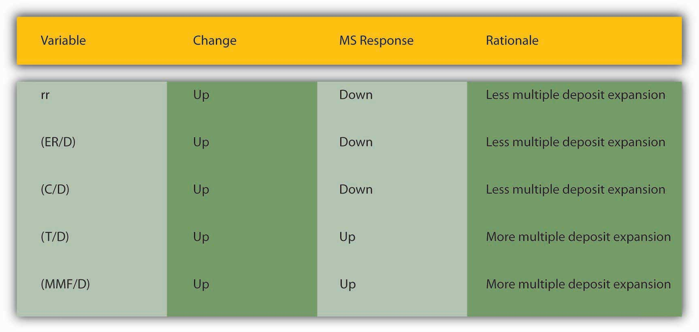

By the end of this chapter, students should be able to:
In most countries today, a central bank or other monetary authority is charged with issuing domestic currency. That is an important charge because the supply of money greatly influences interest and inflation rates and, ultimately, aggregate output. If the central bank’s monetary policy is good, if it creates just the right amount of money, the economy will hum, and interest and inflation rates will be low. If it creates too much money too quickly, prices will increase rapidly and wipe out people’s savings until even the poorest people are nominal billionaires (as in Zimbabwe recently).funkydowntown.com/poor-people-in-zimbabwe-are-millionaires-and-billionaires; www.hoax-slayer.com/zimbabwe-hyperinflation.shtml If it creates too little money too slowly, prices will fall, wiping out debtors and making it nearly impossible to earn profits in business (as in the Great Depression). But even less extreme errors can have serious negative consequences for the economy and hence your wallets, careers, and dreams. This chapter is a little involved, but it is worth thoroughly understanding the money supply process and money multipliers if you want you and yours to be healthy and happy.
Ultimately, the money supply is determined by the interaction of four groups: commercial banks and other depositories, depositors, borrowers, and the central bank. Like any bank, the central bank’s balance sheet is composed of assets and liabilities. Its assets are similar to those of common banks and include government securitiesStudents sometimes become confused about this because they think the central bank is the government. At most, it is part of the government, and not the part that issues the bonds. Sometimes, as in the case of the BUS and SBUS, it is not part of the government at all. and discount loans. The former provide the central bank with income and a liquid asset that it can easily and cheaply buy and sell to alter its balance sheet. The latter are generally loans made to commercial banks. So far, so good. The central bank’s liabilities, however, differ fundamentally from those of common banks. Its most important liabilities are currency in circulation and reserves.
It may seem strange to see currency and reserves listed as liabilities of the central bank because those things are the assets of commercial banks. In fact, for everyone but the central bank, the central bank’s notes, Federal Reserve notes (FRN) in the United States, are assets or things owned. But for the central bank, its notes are things owed (liabilities). Every financial asset is somebody else’s liability, of course. A promissory note (IOU) that you signed would be your liability, but it would be an asset for the note’s holder or owner. Similarly, a bank deposit is a liability for the bank but an asset for the depositor. In like fashion, commercial banks own their deposits in the Fed (reserves), so they count them as assets. The Fed owes that money to commercial banks, so it must count them as liabilities. The same goes for FRN: the public owns them, but the Fed, as their issuer, owes them. (Don’t be confused by the fact that what the Fed owes to holders is nothing more than the right to use the notes to pay sums the holders owe to the government for taxes and the like.)
Currency in circulation (C) and reserves (R) compose the monetary baseThe most basic, powerful types of money in a given monetary system, that is, gold and silver under the gold standard, FRN, and reserves (Federal Reserve deposits) today.(MB, aka high-powered money), the most basic building blocks of the money supply. Basically, MB = C + R, an equation you’ll want to internalize. In the United States, C includes FRN and coins issued by the U.S. Treasury. We can ignore the latter because it is a relatively small percentage of the MB, and the Treasury cannot legally manage the volume of coinage in circulation in an active fashion, but rather only meets the demand for each denomination: .01, .05, .10, .25, .50, and 1.00 coins. (The Fed also supplies the $1.00 unit, and for some reason Americans prefer $1 notes to coins. In most countries, coins fill demand for the single currency unit denomination.) C includes only FRN and coins in the hands of nonbanks. Any FRN in banks is called vault cash and is included in R, which also includes bank deposits with the Fed. Reserves are of two types: those required or mandated by the central bank (RR), and any additional or excess reserves (ER) that banks wish to hold. The latter are usually small, but they can grow substantially during panics like that of September–October 2008.
Central banks, of course, are highly profitable institutions because their assets earn interest but their liabilities are costless, or nearly so. Printing money en masse with modern technology is pretty cheap, and reserves are nothing more than accounting entries. Many central banks, including the Federal Reserve, now pay interest on reserves, but of course any interest paid is composed of cheap notes or, more likely, even cheaper accounting entries. Central banks, therefore, have no gap problems, and liquidity management is a snap because they can always print more notes or create more reserves. Central banks anachronistically own prodigious quantities of gold, but some have begun to sell off their holdings because they no longer convert their notes into gold or anything else for that matter.news.goldseek.com/GoldSeek/1177619058.php Gold is no longer part of the MB but is rather just a commodity with unusually good monetary characteristics (high value-to-weight ratio, divisible, easily authenticated, and so forth).
We are now ready to understand how the central bank influences the money supply (MS) with the aid of the T-accounts—accounts that show only the changes in balance sheets. Like regular balance sheets, however, T-accounts must balance (asset changes must equal liability changes). Central banks like the Fed influence the MS via the MB. They control their monetary liabilities, MB, by buying and selling securities, a process called open market operationsThe purchase or sale of assets by a central bank in order to adjust the money supply. See monetary base.. If a central bank wants to increase the MB, it need only buy a security. (Any asset will do, but securities, especially government bonds, are generally best because there is little default risk, liquidity is high, and they pay interest.) If a central bank bought a $10,000 bond from a bank, the following would occur:
| Banking System | |
|---|---|
| Assets | Liabilities |
| Securities −$10,000 | |
| Reserves +$10,000 | |
The banking system would lose $10,000 worth of securities but gain $10,000 of reserves (probably a credit in its account with the central bank but, as noted above, FRN or other forms of cash also count as reserves).
| Central Bank | |
|---|---|
| Assets | Liabilities |
| Securities +$10,000 | Reserves +$10,000 |
The central bank would gain $10,000 of securities essentially by creating $10,000 of reserves. Notice that the item transferred, securities, has opposite signs, negative for the banking system and positive for the central bank. That makes good sense if you think about it because one party is selling (giving up) and the other is buying (receiving). Note also that the central bank’s liability has the same sign as the banking system’s asset. That too makes sense because, as noted above, the central bank’s liabilities are everyone else’s assets. So if the central bank’s liabilities increase or decrease, everyone else’s assets should do likewise.
If the central bank happens to buy a bond from the public (any nonbank), and that entity deposits the proceeds in its bank, precisely the same outcome would occur, though via a slightly more circuitous route:
| Some Dude | |
|---|---|
| Assets | Liabilities |
| Securities −$10,000 | |
| Checkable deposits +$10,000 | |
| Banking System | |
|---|---|
| Assets | Liabilities |
| Reserves +$10,000 | Checkable deposits +$10,000 |
| Central Bank | |
|---|---|
| Assets | Liabilities |
| Securities +$10,000 | Reserves +$10,000 |
If the nonbank seller of the security keeps the proceeds as cash (FRN), however, the outcome is slightly different:
| Some Dude | |
|---|---|
| Assets | Liabilities |
| Securities −$10,000 | |
| Currency +$10,000 | |
| Central Bank | |
|---|---|
| Assets | Liabilities |
| Securities +$10,000 | Currency in circulation +$10,000 |
Note that in either case, however, the MB increases by the amount of the purchase because either C or R increases by the amount of the purchase. Keep in mind that currency in circulation means cash (like FRN) no longer in the central bank. An IOU in the hands of its maker is no liability; cash in the hands of its issuer is not a liability. So although the money existed physically before Some Dude sold his bond, it did not exist economically as money until it left its papa (mama?), the central bank. If the transaction were reversed and Some Dude bought a bond from the central bank with currency, the notes he paid would cease to be money, and currency in circulation would decrease by $10,000.
In fact, whenever the central bank sells an asset, the exact opposite of the above T-accounts occurs: the MB shrinks because C (and/or R) decreases along with the central bank’s securities holdings, and banks or the nonbank public own more securities but less C or R.
The nonbank public can influence the relative share of C and R but not the MB. Say that you had $55.50 in your bank account but wanted $30 in cash to take your significant other to the carnival. Your T-account would look like the following because you turned $30 of deposits into $30 of FRN:
| Your T-Account | |
|---|---|
| Assets | Liabilities |
| Checkable deposits −$30.00 | |
| Currency +$30.00 | |
Your bank’s T-account would look like the following because it lost $30 of deposits and $30 of reserves, the $30 you walked off with:
| Your Bank | |
|---|---|
| Assets | Liabilities |
| Reserves −$30.00 | Checkable deposits −$30.00 |
The central bank’s T-account would look like the following because the nonbank public (you!) would hold $30 and your bank’s reserves would decrease accordingly (as noted above):
| Central Bank | |
|---|---|
| Assets | Liabilities |
| Currency in circulation $30.00 | |
| Reserves −$30.00 | |
The central bank can also control the monetary base by making loans to banks and receiving their loan repayments. A loan increases the MB and a repayment decreases it. A $1 million loan and repayment a week later looks like this:
| Central Bank | ||
|---|---|---|
| Assets | Liabilities | Date |
| Loans +$1,000,000 | Reserves +$1,000,000 | January 1, 2010 |
| Loans −$1,000,000 | Reserves −$1,000,000 | January 8, 2010 |
| Banking System | ||
|---|---|---|
| Assets | Liabilities | Date |
| Reserves +$1,000,000 | Borrowings +$1,000,000 | January 1, 2010 |
| Reserves −$1,000,000 | Borrowings −$1,000,000 | January 8, 2010 |
Take time now to practice deciphering the effects of open market operations and central bank loans and repayments via T-accounts in Exercise 1. You’ll be glad you did.
Use T-accounts to describe what happens in the following instances:
The central bank pretty much controls the size of the monetary base. (The check clearing process and the government’s banking activities can cause some short-term flutter, but generally the central bank can anticipate such fluctuations and respond accordingly.) That does not mean, however, that the central bank controls the money supply, which consists of more than just MB. (M1, for example, also includes checkable deposits.) The reason is that each $1 (or €1, etc.) of additional MB creates some multiple > 1 of new deposits in a process called multiple deposit creation.
Suppose Some Bank wants to decrease its holding of securities and increase its lending. It could sell $1 million of its securities to the central bank. The T-accounts would be:
| Some Bank | |
|---|---|
| Assets | Liabilities |
| Securities −$1 million | |
| Reserves +$1 million | |
| Central Bank | |
|---|---|
| Assets | Liabilities |
| Securities +$1 million | Reserves +$1 million |
Some Bank suddenly has $1 million in excess reserves. (Its deposits are unchanged, but it has $1 million more in cash.) The bank can now make more loans. So its T-account will be the following:
| Some Bank | |
|---|---|
| Assets | Liabilities |
| Loans +$1 million | Deposits +$1 million |
Deposits are created in the process of making the loan, so the bank has effectively increased M1 by $1 million. The borrower will not leave the proceeds of the loan in the bank for long but instead will use it, within the guidelines set by the loan’s covenants, to make payments. As the deposits flow out of Some Bank, its excess reserves decline until finally Some Bank has essentially swapped securities for loans:
| Some Bank | |
|---|---|
| Assets | Liabilities |
| Securities ?$1 million | |
| Loans +$1 million | |
But now there is another $1 million of checkable deposits out there and they rarely rest. Suppose, for simplicity’s sake, they all end up at Another Bank. Its T-account would be the following:
| Another Bank | |
|---|---|
| Assets Bank | Liabilities |
| Reserves +$1 million | Checkable deposits +$1 million |
If the required reserve ratio (rr) is 10 percent, Another Bank can, and likely will, use those deposits to fund a loan, making its T-account:
| Another Bank | |
|---|---|
| Assets | Liabilities |
| Reserves +$.1 million | Checkable Deposits +$1 million |
| Loans +$.9 million | |
That loan will also eventually be paid out to others and deposited into other banks, which in turn will lend 90 percent of them (1 ? rr) to other borrowers. Even if a bank decides to invest in securities instead of loans, as long as it buys the bonds from anyone but the central bank, the multiple deposit creation expansion will continue, as in Figure 15.1 "Multiple deposit creation, with an increase in reserves of $1 million, if rr = .10".
Figure 15.1 Multiple deposit creation, with an increase in reserves of $1 million, if rr = .10

Notice that the increase in deposits is the same as the increase in loans from the previous bank. The increase in reserves is the increase in deposits times the required reserve ratio of .10, and the increase in loans is the increase in deposits times the remainder, .90. Rather than working through this rather clunky process every time, you can calculate the effects of increasing reserves with the so-called simple deposit multiplier formula:
where:
△D = change in deposits
△R = change in reserves
Rr = required reserve ratio
1/.1 × 1 million = 10 million, just as in Figure 15.1 "Multiple deposit creation, with an increase in reserves of $1 million, if rr = .10"Practice calculating the simple deposit multiplier in Exercise 2.
Use the simple deposit multiplier △D = (1/rr) × △R to calculate the change in deposits given the following conditions:
| Required Reserve Ratio | Change in Reserves | Answer: Change in Deposits |
|---|---|---|
| .1 | 10 | 100 |
| .5 | 10 | 20 |
| 1 | 10 | 10 |
| .1 | −10 | −100 |
| .1 | 100 | 1,000 |
| 0 | 43.5 | ERROR—cannot divide by 0 |
Suppose the Federal Reserve wants to increase the amount of checkable deposits by $1,000,000 by conducting open market operations. Using the simple model of multiple deposit creation, determine what value of securities the Fed should purchase, assuming a required reserve ratio of 5 percent. What two major assumptions does the simple model of multiple deposit creation make? Show the appropriate equation and work.
The Fed should purchase $50,000 worth of securities. The simple model of multiple deposit creation is △D = (1/rr) × △R, which of course is the same as △R = △D/(1/rr). So for this problem 1,000,000/(1/.05) = $50,000 worth of securities should be purchased. This model assumes that money is not held as cash and that banks do not hold excess reserves.
Pretty easy, eh? Too bad the simple deposit multiplier isn’t very accurate. It provides an upper bound to the deposit creation process. The model simply isn’t very realistic. Sometimes banks hold excess reserves, and people sometimes prefer to hold cash instead of deposits, thereby stopping the multiple deposit creation process cold. If the original borrower, for example, had taken cash and paid it out to people who also preferred cash over deposits no expansion of the money supply would have occurred. Ditto if Some Bank had decided that it was too risky to make new loans and had simply exchanged its securities for reserves. Or if no one was willing to borrow. Those are extreme examples, but anywhere along the process leaks into cash or excess reserves sap the deposit multiplier. That is why, at the beginning of the chapter, we said that depositors, borrowers, and banks were also important players in the money supply determination process. In the next section, we’ll take their decisions into account.
To review, an increase (decrease) in the monetary base (MB, which = C + R) leads to an even greater increase (decrease) in the money supply (MS, such as M1M1 is a measure of the money supply that includes currency in circulation plus checkable deposits. or M2M2 is a measure of the money supply that includes M1 plus time deposits and noninstitutional (retail) money market funds.) due to the multiple deposit creation process. In the previous section, you also learned a simple but unrealistic upper-bound formula for estimating the change that assumed that banks hold no excess reserves and that the public holds no currency.
You are a research associate for Moody’s subsidiary, High Frequency Economics, in West Chester, Pennsylvania. A client wants you to project changes in M1 given likely increases in the monetary base. Because of a glitch in the Federal Reserve’s computer systems, currency, deposit, and excess reserve figures will not be available for at least one week. A private firm, however, can provide you with good estimates of changes in banking system reserves, and of course the required reserve ratio is well known. What equation can you use to help your client? What are the equation’s assumptions and limitations?
You cannot use the more complex M1 money multiplier this week because of the Fed’s computer glitch, so you should use the simple deposit multiplier from Chapter 15 "The Money Supply Process and the Money Multipliers": ΔD = (1/rr) × ΔR. The equation provides an upper-bound estimate for changes in deposits. It assumes that the public will hold no more currency and that banks will hold no increased excess reserves.
To get a more realistic estimate, we’ll have to do a little more work. We start with the observation that we can consider the money supply to be a function of the monetary base times some money multiplier (m):
This is basically a broader version of the simple multiplier formula discussed in the previous section, except that instead of calculating the change in deposits (ΔD) brought about by the change in reserves (ΔR), we will now calculate the change in the money supply (ΔMS) brought about by the change in the monetary base (ΔMB). Furthermore, instead of using the reciprocal of the required reserve ratio (1/rr) as the multiplier, we will use a more sophisticated one (m1, and later m2) that doesn’t assume away cash and excess reserves.
We can add currency and excess reserves to the equation by algebraically describing their relationship to checkable deposits Deposits that can easily, cheaply, and quickly be drawn upon by check in order to make payments. Also known as transaction deposits. in the form of a ratio:
C/D = currency ratio
ER/D = excess reserves ratio
Recall that required reserves are equal to checkable deposits (D) times the required reserve ratio (rr). Total reserves equal required reserves plus excess reserves:
So we can render MB = C + R as MB = C + rrD + ER. Note that we have successfully removed C and ER from the multiple deposit expansion process by separating them from rrD. After further algebraic manipulations of the above equation and the reciprocal of the reserve ratio (1/rr) concept embedded in the simple deposit multiplier, we’re left with a more sophisticated, more realistic money multiplier:
So if
Required reserve ratio (rr) = .2
Currency in circulation = $100 billion
Deposits = $400 billion
Excess reserves = $10 billion
Practice calculating the money multiplier in Exercise 1.
Given the following, calculate the M1 money multiplier using the formula m1 = 1 + (C/D)/[rr + (ER/D) + (C/D)].
| Currency | Deposits | Excess Reserves | Required Reserve Ratio | Answer: m1 |
|---|---|---|---|---|
| 100 | 100 | 10 | .1 | 1.67 |
| 100 | 100 | 10 | .2 | 1.54 |
| 100 | 1,000 | 10 | .2 | 3.55 |
| 1,000 | 100 | 10 | .2 | 1.07 |
| 1,000 | 100 | 50 | .2 | 1.02 |
| 100 | 1,000 | 50 | .2 | 3.14 |
| 100 | 1,000 | 0 | 1 | 1 |
Once you have m, plug it into the formula ΔMS = m × ΔMB. So if m1 = 2.6316 and the monetary base increases by $100,000, the money supply will increase by $263,160. If m1 = 4.5 and MB decreases by $1 million, the money supply will decrease by $4.5 million, and so forth. Practice this in Exercise 2.
Calculate the change in the money supply given the following:
| Change in MB | m1 | Answer: Change in MS |
|---|---|---|
| 100 | 2 | 200 |
| 100 | 4 | 400 |
| −100 | 2 | −200 |
| −100 | 4 | −400 |
| 1,000 | 2 | 2,000 |
| −1,000 | 2 | −2,000 |
| 10,000 | 1 | 10,000 |
| −10,000 | 1 | −10,000 |
Explain Figure 15.2 "U.S. MB and M1, 1959–2010", Figure 15.3 "U.S. m", and Figure 15.4 "U.S. currency and checkable deposits, 1959–2010".
Figure 15.2 U.S. MB and M1, 1959–2010

Figure 15.3 U.S. m1, 1959–2010.

Figure 15.4 U.S. currency and checkable deposits, 1959–2010

Figure 15.5 U.S. currency ratio, 1959–2010

In Figure 15.2 "U.S. MB and M1, 1959–2010", M1 has increased because MB has increased, likely due to net open market purchases by the Fed. Apparently, m1 has changed rather markedly since the early 1990s. In Figure 15.3 "U.S. m", the M1 money multiplier m1 has indeed dropped considerably since about 1995. That could be caused by an increase in rr, C/D, or ER/D. Figure 15.4 "U.S. currency and checkable deposits, 1959–2010" shows that m decreased primarily because C/D increased. It also shows that the increase in C/D was due largely to the stagnation in D coupled with the continued growth of C. The stagnation in D is likely due to the advent of sweep accounts. Figure 15.5 "U.S. currency ratio, 1959–2010" isolates C/D for closer study.
Note that m1 is the M1 money multiplier. With a little bit more work, one can also calculate the M2 money multiplier (m2). We want to do this because M2 is a more accurate measure of the money supply than M1, as it is usually a better indicator of changes in prices, interest rates, inflation, and, ultimately, aggregate output. (And hence whether you and your family live in a nice place with a 3D HDTV, three big refrigerators, etc., or if you live in “a van down by the river.”)www.youtube.com/watch?v=3nhgfjrKi0o; www.facebook.com/pages/Living-in-a-van-down-by-the -river/120550394658234
Recall from Chapter 3 "Money" that M2 = C + D + T + MMF, where T = time and savings deposits and MMF = money market funds, money market deposit accounts, and overnight loans. We account for the extra types of deposits in the same way as we accounted for currency and excess reserves, by expressing them as ratios against checkable deposits:
(T/D) = time deposit ratio
(MMF/D) = money market ratio
which leads to the following equation:
Once you calculate m2, multiply it by the change in MB to calculate the change in the MS, specifically in M2, just as you did in Exercise 2. Notice that the denominator of the m2 equation is the same as the m1 equation but that we have added the time and money market ratios to the numerator. So M2 is alwaysM2 would equal m1 iff T = 0 and MMF = 0, which is highly unlikely. Note: if means if and only if. > m1, ceteris paribus, which makes sense when you recall that M2 is composed of M1 plus other forms of money. To verify this, recall that we calculated m1 as 2.6316 when
Required reserves (rr) = .2
Currency in circulation = $100 million
Deposits = $400 million
Excess reserves = $10 million
We’ll now add time deposits of $900 million and money market funds of $800 million and calculate M2:
This is quite a bit higher than m1 because time deposits and money market funds are not subject to reserve requirements, so they can expand more than checkable deposits because there is less drag on them during the multiple expansion process.
Practice calculating the M2 money multiplier on your own in the exercise.
Calculate the M2 money multiplier using the following formula: M2 = 1 + (C/D) + (T/D) + (MMF/D)/[rr + (ER/D) + (C/D)].
| Currency | Deposits | Excess Reserves | Required Reserve Ratio | Time Deposits | Money Market Funds | Answer: M2 |
|---|---|---|---|---|---|---|
| 100 | 100 | 10 | 0.1 | 1,000 | 1,000 | 18.33 |
| 100 | 100 | 10 | 0.2 | 1,000 | 100 | 10 |
| 100 | 100 | 10 | 0.2 | 100 | 1,000 | 10 |
| 1,000 | 100 | 10 | 0.2 | 1,000 | 1,000 | 3.01 |
| 1,000 | 100 | 50 | 0.2 | 1,000 | 1,000 | 2.90 |
| 100 | 1,000 | 50 | 0.2 | 1,000 | 1,000 | 8.86 |
| 100 | 1,000 | 0 | 1 | 1,000 | 1,000 | 2.82 |
| 100 | 1 | 10 | 0.1 | 1,000 | 1,000 | 19.08 |
By way of summary, Figure 15.6 "Major influences on m" explains why each of the major variables influences m1 and m2 in the ways implied by the equations presented above.
Figure 15.6 Major influences on m1 and m2
As we saw at the beginning of this chapter, currency holdings, excess reserves, and required reserves slow down the multiple deposit creation process by removing funds from it. The bigger rr and ER/D are, the less each bank lends of the new deposits it receives. The bigger C/D is, the less money is deposited in the first place. For those reasons, we place those variables in the denominator. The larger the denominator, holding the numerator constant, the smaller m1 or m2 will be, of course. The appropriate money supply components compose the numerator-currency, and checkable deposits for m1, and currency, checkable deposits, time deposits, and money market mutual funds compose the numerator for m2.
This leaves us to consider why C/D, rr, and ER/D change over time. Short term, the currency ratio varies directly with the interest rate and the stability of the banking system. As the interest rate increases, the opportunity cost of keeping cash increases, so people are less anxious to hold it. People are also less anxious to hold currency if the banking system is stable because their money is safer in a checking deposit. If interest rates are extremely low or people believe the banks might be shaky, they naturally want to hold more physical cash. Longer term, C/D may be influenced by technology and loophole mining, encouraging bankers and depositors to eschew traditional checkable deposits in favor of sweep accounts.
The required reserve ratio is mandated by the central bank but, as noted in Chapter 10 "Innovation and Structure in Banking and Finance", loophole mining and technology have rendered it less important in recent years because sweep accounts allow banks to minimize the de jure level of their checkable deposits. In many places, rr is no longer a binding constraint on banks so, as we’ll see, most central banks no longer consider changing it as an effective monetary policy tool. (This in no way affects the money multiplier, which would provide the same figure for m1 or M2 whether we calculate them as above or replace rr and ER/D with R/D, where R = total reserves.)
Prove the assertion made above: “This in no way affects the money multiplier, which would provide the same figure for m1 or M2 whether we calculate them as above or replace rr and ER/D with R/D, where R = total reserves.” Suppose that C = 100, R = 200, and D = 500 and that R is composed of required reserves of 100 and excess reserves of 100. That means that rr must equal .2(100/500).
Under the formula provided in the text,
Under the formula suggested above,
Excess reserves (or just reserves in a system without required reserves) are inversely related to the interest rate. In the early 1960s and early 2000s, when the interest rate was well less than 5 percent, ER/D was high, at .003 to .004. In the 1970s and 1980s, when interest rates were 10 percent and higher, ER/D dropped to .001 to .002. As we learned in Chapter 9 "Bank Management", expected deposit outflows directly affect excess reserve levels as banks stock up on reserves to meet the outflows. When uncertainty is high or a banking crisis is in progress or appears imminent, bankers will increase ER to protect their banks.
In summary, the central bank influences the money supply by controlling the monetary base and, to a far lesser extent, the required reserve ratio. Depositors, banks, and borrowers influence the money supply by influencing m1 and M2, specifically by determining the money multiplier, with depositors largely in control of C/D; depositors and banks interacting via deposit outflow expectations to determine E/R; and borrowers, depositors, banks, and the central bank interacting to determine interest rates and hence to some extent both C/D and E/R.
Hummel, William. Money: What It Is, How It Works 2nd ed. Bloomington, IN: iUniverse, 2006.
Mayes, David, and Jan Toporowski. Open Market Operations and Financial Markets. New York: Routledge, 2007.